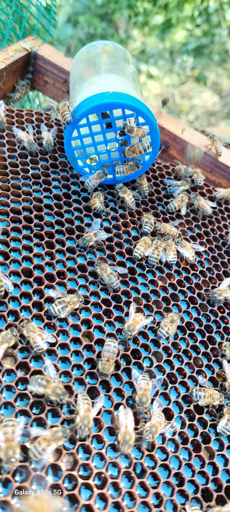

Les abeilles
Nos ruches abritent des "zinneke de la forêt", des abeilles sans race définie, parfaitement adaptées à Bruxelles. "
En été, une ruche compte entre 50 000 et 60 000 individus, contre 15 000 en hiver. Pour communiquer, elles utilisent la "danse du soleil" : une butineuse qui trouve du nectar revient danser pour indiquer la direction à ses sœurs.